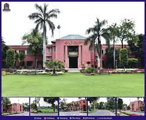

Introduction To SE :
The BS in SE degree equips students with theoretical as well as technical knowledge of the fundamentals of software engineering, algorithm analysis, data structures, programming languages, web development, and mobile application development. There are courses in Software Quality Assurance in order to ensure software correctness, reliability and safety, with the goal to produce high-quality software. Courses are Software Requirement Engineering,
About US:
Computer Labs
With a rigorous curriculum, we prepare students with technical skills and principles for success in the field. Our tailored education
and research opportunities equip students for their chosen career path


Current Students
As a current student, you'll have access to our cutting-edge labs, state-of-the-art software, and exceptional faculty. you'll have access to our cutting-edge labs.